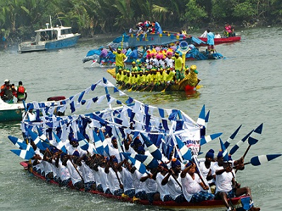

Madokuboba Dokubo | WDD 130
Hello! My name is Madokuboba Dokubo but you can call me Madoks for short. I am a developer from Nigeria who loves debugging and problem-solving. I enjoy tackling challenges, writing clean code and of course, I deeply enjoy good food and a good FBI thriller.
Rivers, Nigeria.

Rivers State is often referred to as the Land of Milk and Honey and is known as the seafood capital of Nigeria. It is a land rich in vibrant culture, diversity, and untapped potential. The beauty of Rivers State goes far beyond its tribes and ethnic groups, it's a place where nature and resilience thrive hand in hand. From its stunning coastlines and lush mangrove forests to the creativity and strength of its people, Rivers State stands as a testament to the wealth of opportunities waiting to be explored. Home to some of Nigeria's most important resources, including oil and palm fruit, Rivers State plays a critical role in the country's economy. Yet, its true beauty lies not just in its natural resources but in the spirit of its people, innovative, hard-working, and ever forward-looking. Despite the negative narratives often painted in the media, Rivers State remains a land full of promise, where culture, nature, and industry meet in powerful harmony.